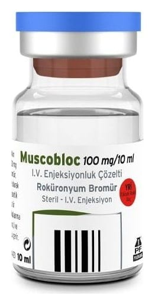

Muscobloc 100 mg/10 ml İ.V. Enjeksiyonluk Çözelti, 10 Adet

Ne için kullanılır
KT · Bölüm 1MUSCOBLOC 10 mL’lik 10 cam flakon içeren karton kutularda ambalajlanmıştır. MUSCOBLOC, kas gevşeticileri olarak bilinen bir ilaç grubunun üyesidir. Kas gevşeticiler, genel anestezinin bir bölümü olarak ameliyat sırasında kullanılır. Ameliyat olurken, kaslarınızın tamamen gevşemesi gerekir; bu sayede cerrah, ameliyatı daha kolay gerçekleştirir. Normalde sinirler, taşıdıkları mesajları kaslara, impulslar şeklinde iletir. MUSCOBLOC bu impulsları bloke ettiğinden, kaslar gevşer. Bu sırada solunumda kullanılan kaslarımız da gevşediğinden; ameliyat sırasında ve sonrasında, kendi başınıza solunum yapıncaya kadar solunumunuza yardım edilmesi gerekir (yapay solunum). Kas gevşeticisinin etkisi, ameliyat sırasında sürekli kontrol edilir ve gerekirse, biraz daha kas gevşetici verilir. Ameliyatın sonunda, MUSCOBLOC’un etkisinin ortadan kalkmasına izin verilir ve kendi başınıza solunum yapmaya başlarsınız. Bunu hızlandırmak için bazen, başka bir ilaç daha verilir.
MUSCOBLOC ayrıca Yoğun Bakım Birimi’nde, kasları gevşek durumda tutmak amacıyla kullanılır.